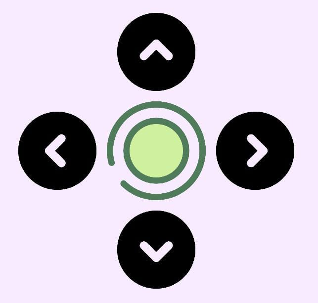

Esta es una aplicación diseñada para controlar carritos construidos con Arduino, decidimos desarrollar nuestra propia aplicación desde cero para evitar la dependencia de aplicaciones externas y asegurar una experiencia de uso personalizada y adaptada a nuestras necesidades específicas. A través de esta aplicación, el usuario puede manejar las funciones principales del carrito, como la de ir para adelante, atras, derecha e izquierda, de manera intuitiva y eficaz.
Para poder conectarte a Tito o a cualquier robot, primero hay que conectar TU bluetooth del teléfono al bluetooth del robot en cuestión, normalmente este aparecerá con el nombre que este robot tenga, una vez conectado de manera externa, ya dentro de la aplicación vas a apretar el botón donde dice "conectar carrito",
buscas el nombre del bluetooth al cual te conectaste antes y debajo de este botón, te aparecerá un mensaje de que te has conectado al bluetooth que seleccionaste correctamente. Una vez terminado eso, ya podés manejar a tu robot presionando las flechas que se encuentran debajo del boton de bluetooth, Para la creación de nuestra aplicación, utilizamos App Inventor 2, una herramienta que permite desarrollar aplicaciones de manera intuitiva y sencilla. App Inventor 2 destaca por su interfaz intuitiva de arrastrar y soltar bloques, lo que facilita el proceso de programación para aquellos que tienen poca experiencia en desarrollo de aplicaciones. Además, nos permitió personalizar completamente las funciones de nuestra aplicación. Gracias a esta plataforma, pudimos crear una aplicación funcional y efectiva en muy poco tiempo.